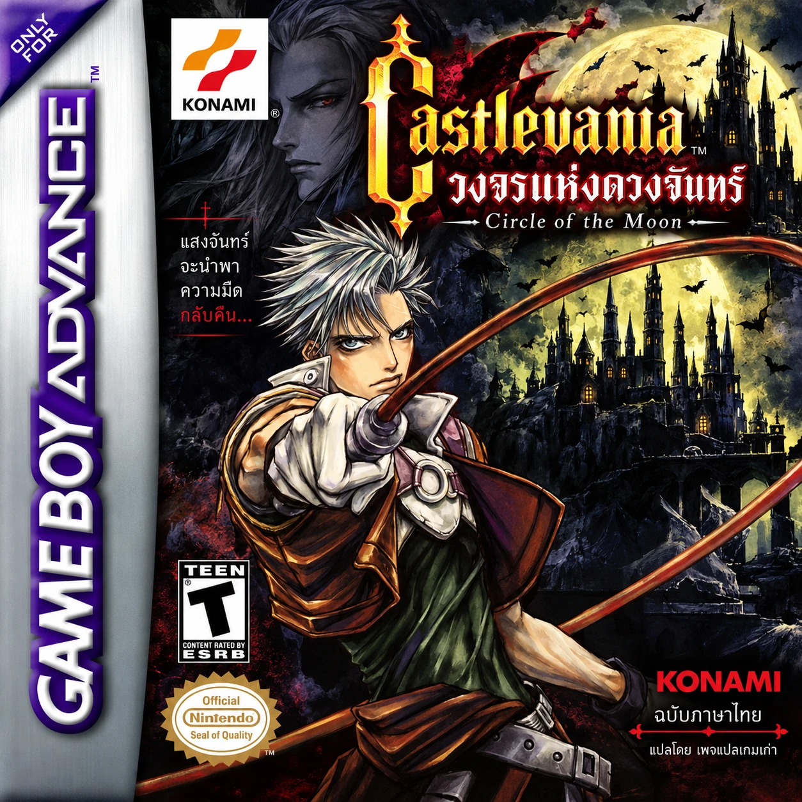
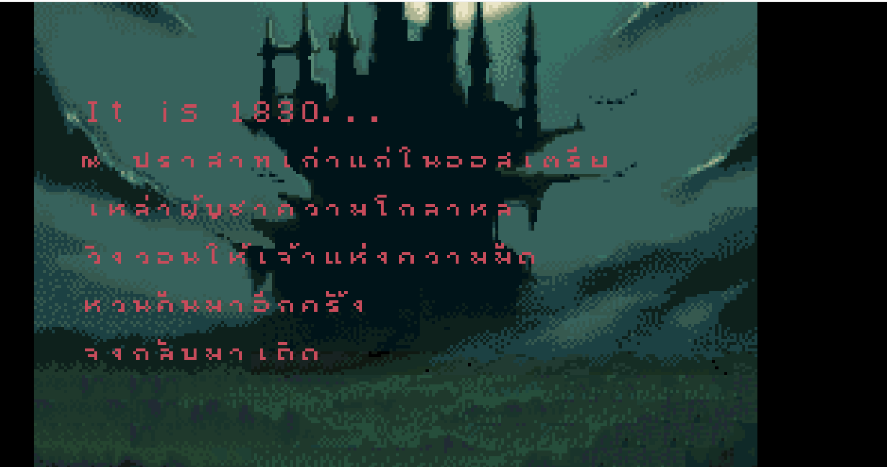

Castlevania: Circle of the Moon
GBA · ภาษาไทย v1.0

ภาพตัวอย่างจาก ROM ภาษาไทยฉบับนี้
Castlevania: Circle of the Moon ฉบับภาษาไทย v1.0 โดยเพจแปลเกมเก่า สำหรับ Game Boy Advance ใช้ฟอนต์ไทย 8×8 ที่ปรับให้แสดงในเกม และใส่ข้อความภาษาไทยลงใน ROM รุ่นยุโรป
รายละเอียดแพตช์
- บันทึกข้อความภาษาไทยในเกม 520 รายการ รวมบทสนทนาที่กู้เพิ่ม 26 รายการ
- เพิ่มชื่อที่เคยขาด 11 รายการ และแก้ข้อความไทยปนอังกฤษ 7 รายการ
- ภาพตัวอย่างด้านซ้ายแสดงฟอนต์ไทยในฉากเปิดเกม
ROM ต้นฉบับที่รองรับ
Castlevania: Circle of the Moon รุ่นยุโรป (E) รหัสเกม AAMP ขนาด 8 MB เท่านั้น
ระบบตรวจ SHA-256 ของไฟล์ก่อนแปะ ใช้กับ ROM รุ่นอื่นไม่ได้
Castlevania: Circle of the Moon รุ่นยุโรป (E) รหัสเกม AAMP ขนาด 8 MB เท่านั้น
ระบบตรวจ SHA-256 ของไฟล์ก่อนแปะ ใช้กับ ROM รุ่นอื่นไม่ได้
- เลือก ROM ต้นฉบับ .gba ของคุณ
- กด “สร้างไฟล์ภาษาไทย” ระบบแปะแพตช์ในเครื่องคุณ
- ดาวน์โหลดไฟล์ .gba ภาษาไทยและเปิดในอีมูเลเตอร์
ไฟล์ ROM ไม่ถูกอัปโหลดขึ้นเว็บ
กำลังโหลดแพตช์…
สถานะ v1.0
ยังมีข้อความภาษาอังกฤษบางส่วน และการแสดงฟอนต์ในเมนูบางจุดยังต้องตรวจแก้เพิ่มเติม ยังไม่ได้ทดสอบเล่นจบเกม หากพบคำผิดหรือข้อความแสดงเพี้ยน สามารถส่งภาพและตำแหน่งที่พบให้เพจแปลเกมเก่าได้
ยังมีข้อความภาษาอังกฤษบางส่วน และการแสดงฟอนต์ในเมนูบางจุดยังต้องตรวจแก้เพิ่มเติม ยังไม่ได้ทดสอบเล่นจบเกม หากพบคำผิดหรือข้อความแสดงเพี้ยน สามารถส่งภาพและตำแหน่งที่พบให้เพจแปลเกมเก่าได้
ค่า SHA-256 สำหรับตรวจสอบ
ต้นฉบับ
ไฟล์ไทย v1.0